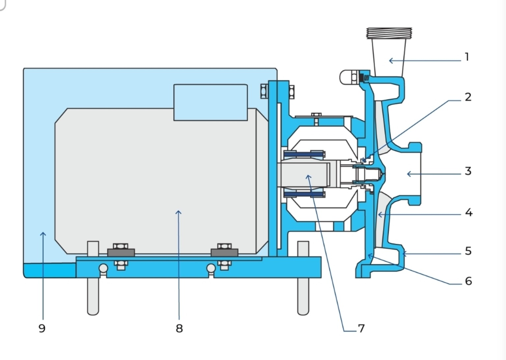
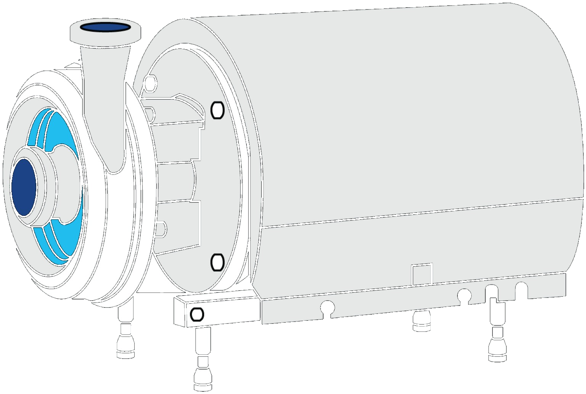

Sanitary Pumps
Pumps are the circulation and transport system of a dairy plant. They move milk, cream, water, cleaning solutions and other process fluids between tanks and processing equipment while maintaining the required flow, pressure and hygienic conditions.
Why pumps are essential
Modern dairy plants depend on pumps because milk and dairy products must travel through long hygienic pipelines, valves, heat exchangers, filters and other equipment that create resistance to flow.

Main parts of a sanitary centrifugal pump
At a glance
A sanitary centrifugal pump combines a rotating impeller, casing, shaft and sealing system with a motor drive. The liquid enters through the suction connection, is accelerated by the impeller and leaves through the delivery connection at increased pressure.
Core idea
Mechanical energy → impeller motion → liquid velocity → pressure rise → controlled delivery.
Main parts of a centrifugal pump
The numbered diagram above is organised into the nine principal components below.
Delivery line
The outlet passage carries pumped liquid away from the casing toward the next process stage. Flow-control or check-valve arrangements are normally placed on the delivery side rather than restricting the suction side.
Shaft seal
Seals the rotating shaft where it passes through the stationary pump casing. Sanitary pumps commonly use mechanical seals; flushed versions can provide cooling, cleaning or a barrier between product and atmosphere.
Suction line
The inlet path through which liquid reaches the pump. It should be short, generously sized and arranged with as few unnecessary bends and valves as practical to minimise pressure loss and cavitation risk.
Impeller
The rotating hydraulic element. Its vanes impart motion to the liquid entering at the eye and increase the liquid's velocity and pressure. Impeller geometry strongly influences capacity, head and product handling.
Pump casing
Surrounds the impeller and guides liquid from the impeller toward the outlet. It also converts part of the liquid's velocity into useful pressure before discharge.
Back plate
Supports the rear side of the pump chamber and provides the stationary mounting surface for the shaft-seal arrangement in many sanitary centrifugal designs.
Motor shaft
Transfers rotational power from the drive motor to the pump's rotating assembly. Accurate alignment is important for smooth operation, seal life and bearing performance.
Motor
Supplies the mechanical energy required to rotate the impeller. Motor power is selected from the required flow, head, product properties and pump efficiency, with suitable protection for the plant environment.
Stainless-steel shroud & sound insulation
Provides hygienic protection and a cleanable outer finish around the drive assembly while helping reduce noise from the motor and rotating equipment.

Inside the pump
The cutaway view makes the hydraulic and mechanical arrangement easier to understand: the suction side leads toward the impeller eye, the rotating assembly transfers energy to the liquid, and the casing collects and directs the flow to the outlet.
The shaft-seal region is especially important because it forms the boundary between a rotating shaft and the stationary casing. A properly selected and lubricated mechanical seal reduces leakage and protects product integrity.
How a centrifugal pump moves milk
Types of pumps used in dairy industries
No single pump is ideal for every dairy duty. Product viscosity, air content, required pressure, flow rate and sensitivity determine the most suitable design.
Centrifugal pump
The most widely used sanitary pump in dairy plants. It is economical, adaptable and well suited to relatively low-viscosity liquids that do not require particularly gentle treatment.
Typical duties: raw milk transfer, pasteurised milk, water, whey, dilute cleaning solutions and general process circulation.
Positive-displacement pump
Moves a defined volume for each revolution or stroke. It is preferred when controlled volumetric transfer, higher viscosity or gentle handling is important.
Examples: lobe-rotor, twin-screw, eccentric-screw, piston, diaphragm and peristaltic pumps.
Liquid-ring pump
A self-priming design when its casing contains sufficient liquid. It can handle liquid streams with significant entrained air or gas.
Typical dairy duty: CIP return service, where air can enter the suction stream.
Common centrifugal pump arrangements
Standard sanitary centrifugal
General-purpose pump for the majority of low-viscosity dairy transfer duties.
High-inlet-pressure centrifugal
Designed for locations where the pump operates with appreciable pressure at its inlet, such as certain filtration and process arrangements.
Multi-stage centrifugal
Uses several impeller stages to develop higher pressure or head, making it useful as a booster where a single stage is insufficient.
Self-priming centrifugal
Special construction intended for applications where air handling or automatic priming is needed; ordinary centrifugal pumps normally require the casing and suction line to be filled before operation.
PD pumps for viscous and sensitive dairy products
Lobe-rotor pump
Two independently driven lobed rotors create inlet vacuum and carry product around the casing. It is widely used for cream, cultured products and curd/whey mixtures because of its sanitary design and gentle product treatment.
Twin-screw pump
Two counter-rotating screws create volumetric chambers. It can provide controlled product transfer with low pulsation and can be designed for strong CIP capability.
Eccentric-screw pump
A rotor moves eccentrically inside a stator to transport product. It handles viscous products gently, but must not be allowed to run dry because the pumping elements can be damaged.
Piston pump
A reciprocating piston moves product through inlet and outlet valves. In dairy applications it is particularly useful for metering duties; the high-pressure pump in a homogeniser is a specialised piston-pump application.
Diaphragm pump
Alternating diaphragm movement creates suction and discharge. Air-operated versions provide gentle transfer but pulsating flow, while mechanically driven versions are also used for metering.
Peristaltic pump
Rollers compress a flexible hose and transport the product in a sealed flow path. It can self-prime and is useful for transport and relatively accurate metering of suitable products.
Which pump is used for which dairy product?
The product itself is often the most important selection factor. Milk and other thin liquids can normally be handled efficiently by centrifugal pumps, while increasing viscosity, structure and sensitivity generally favour positive-displacement designs.
Milk & skim milk
Typical choice • CentrifugalMilk is a relatively low-viscosity liquid, so sanitary centrifugal pumps are the standard choice for reception, storage transfer, pasteurisation feed and general circulation. The pump is selected from the required flow, head, temperature, NPSH and hygienic requirements.
- High flow rates are commonly required.
- Short, well-sized suction lines help protect NPSH margin.
- Variable-speed drives can be used where process flow varies.
Cream
Typical choice • Lobe rotor / twin screwAs fat content increases, cream becomes thicker and its handling becomes more sensitive. The handbook identifies lobe-rotor pumps as widely used for high-fat cream because of their sanitary construction and gentle treatment. Positive-displacement pumping is generally preferred when viscosity is high.
- Keep the pump close to the cream source when viscosity is high.
- Avoid unnecessary pressure loss in suction piping.
- Gentle pumping helps limit unwanted mechanical treatment of sensitive cream.
Yoghurt & cultured products
Typical choice • Lobe rotor / twin screwYoghurt and cultured products may be viscous and structurally sensitive. Positive-displacement pumps provide controlled movement at lower speeds and can be selected to reduce unnecessary shear and structural damage. Lobe-rotor pumps are especially suited to gentle sanitary transfer.
- Product structure and viscosity can change with temperature and processing history.
- Use a pump and speed that match the required gentle-transfer duty.
Curd / curd-whey mixtures
Typical choice • Lobe rotor / positive displacementCurd-containing streams can contain soft particles and have higher apparent viscosity than milk. Lobe-rotor pumping is particularly useful where gentle handling is important and where the product must be transferred without excessive mechanical disruption.
- Maintain adequate suction conditions.
- Avoid sharp restrictions and excessive pump speed.
Butter & dairy spreads
Special duty • Screw conveyor / dedicated positive displacement systemButter is a very high-viscosity, structured fat product and is not a normal centrifugal-pump duty. In continuous butter production, the handbook describes screw conveyors in butter handling and also notes that butter can be pumped directly to the packaging machine. The actual transfer equipment must therefore be designed specifically for butter consistency, temperature and required pressure.
- Screw conveying is a common handling approach for butter.
- Direct pumping requires a dedicated high-viscosity positive-displacement arrangement rather than a standard milk centrifugal pump.
- Temperature strongly affects butter consistency and therefore pumping behaviour.
Concentrated milk, evaporated products & dairy concentrates
Typical choice • Positive displacementAs concentration increases, viscosity and pressure losses can increase substantially. Positive-displacement pumps are often considered when a centrifugal pump can no longer maintain the required flow efficiently or when controlled volumetric transfer is important.
- Pipe diameter becomes especially important for high-viscosity products.
- Locate the pump close to the feeding tank where practical.
- Check the effect of temperature on viscosity before final sizing.
Whey, buttermilk & low-viscosity by-products
Typical choice • CentrifugalRelatively thin whey and buttermilk streams can often be handled by centrifugal pumps. The final choice depends on solids content, temperature, air entrainment and the pressure drop of the connected process equipment.
CIP solutions & water
Typical choice • Centrifugal / liquid-ring for aerated returnCleaning solutions and water are generally low-viscosity services and are well suited to centrifugal pumps. Where CIP return streams contain substantial air, liquid-ring or suitable self-priming designs may be advantageous.
Quick pump selection map
A practical first screening can be made from product behaviour, then confirmed from the pump manufacturer's performance data.
| Product / duty | Typical pump family | Main reason | Key caution |
|---|---|---|---|
| Milk | Centrifugal | Low viscosity and high-flow transfer | Avoid inadequate NPSH and excessive suction losses |
| Skim milk / whey | Centrifugal | Low-viscosity process liquids | Check solids and air content |
| Cream | Lobe rotor / twin screw | Higher viscosity and gentle transfer | Viscosity rises strongly with fat content and temperature |
| Yoghurt / cultured milk | Lobe rotor / twin screw | Viscosity and product structure | Control speed and shear |
| Curd / curd-whey | Lobe rotor / positive displacement | Gentle handling of structured product | Avoid excessive mechanical treatment |
| Butter / spreads | Screw conveyor / dedicated high-viscosity PD | Very high viscosity and semi-solid structure | Temperature and consistency control are critical |
| Concentrates | Positive displacement | Higher viscosity and controlled transfer | Large suction piping may be required |
| Aerated CIP return | Liquid-ring / self-priming | Handles entrained air | Conventional centrifugal pump may lose prime |
Why piping and temperature become critical
Suction side
High-viscosity products create large pressure losses in narrow or long suction lines. The pump should be located close to the source tank where practical, and the suction pipe should be generously sized. Otherwise the pressure at the pump inlet can fall too far and cavitation or poor filling of the pump can occur.
Practical rule
High viscosity → short suction line + larger pipe + low restriction.
Temperature effect
Many dairy products become considerably easier to pump as temperature rises because viscosity decreases. The design temperature must therefore be the actual process temperature, not simply room temperature. For butter and other structured fat products, consistency can change sharply with temperature, making thermal history part of pump selection.
Remember
Viscosity is a property of the product at its operating condition.
Pressure relief is essential
Why?
A positive-displacement pump continues trying to displace product when its speed remains unchanged. If the discharge path is blocked, pressure can rise rapidly because the pump does not simply “slip” like a centrifugal pump.
Protection
A suitable pressure-relief device, bypass or other engineered pressure-protection arrangement is required. The relief system must be compatible with the product, cleaning regime and maximum allowable pressure of the pump and line.
Pumps across a dairy plant
Milk reception
Transfers incoming milk from reception equipment to raw-milk storage tanks and onward processing.
Raw-milk storage
Moves milk between silos, balance tanks, standardisation systems and processing sections.
Pasteurisation
Feed and booster pumps maintain controlled product movement through heat exchangers and associated process equipment.
Homogenisation
High-pressure positive-displacement pumping is used to force milk through the homogenising valve.
Cream & cultured products
Positive-displacement pumps are commonly selected when viscosity, texture or gentle handling makes centrifugal pumping unsuitable.
CIP circulation
Pumps circulate cleaning solutions through tanks, pipelines, valves and processing equipment. Air entrainment can make liquid-ring designs useful in return service.
Membrane filtration
Feed and circulation pumps provide the pressure and flow needed for membrane systems; pump type depends on viscosity and pressure requirements.
Evaporation & powder processing
Pumps transfer concentrates and other process streams between evaporation, storage and drying stages.
Whey & by-product handling
Selection depends on solids, viscosity, temperature and the need to protect downstream product quality.
Installation determines pump performance
Suction line
Keep the pump close to the source tank where practical. Use a generously sized suction pipe and minimise bends, valves and unnecessary restrictions. High suction-side pressure loss reduces the pressure available at the impeller inlet and increases cavitation risk.
Delivery line
Flow-control valves are normally installed on the delivery side. A check valve can help prevent reverse flow and reduce water-hammer effects when the pump stops.
NPSH and cavitation
NPSH is the pressure margin available at the pump inlet above the liquid vapour-pressure requirement. The available NPSH should be greater than the pump's required NPSH at the operating point.
Cavitation occurs when local pressure falls below vapour pressure and vapour bubbles form and collapse. Typical warning signs include crackling noise, vibration, reduced head and loss of pumping performance.
Keeping the product side hygienically separated
Single mechanical seal
A rotating seal ring runs against a stationary ring with a very thin lubricating film between the faces. This arrangement is standard on many sanitary dairy pumps. Running the pump dry can destroy the liquid film and accelerate seal wear.
Flushed mechanical seal
A second seal creates a barrier space through which water or steam can circulate. Flushing can cool or clean the sealing zone, provide a hygienic barrier, or protect the seal when pumping sticky, crystallising or hot products.
Seal materials
Common sanitary seal combinations include carbon against stainless steel; harder materials such as silicon carbide are useful where greater wear resistance is required. The actual combination must match the product, temperature, pressure and cleaning conditions.
How to choose the right dairy pump
| Parameter | What to evaluate | Why it matters |
|---|---|---|
| Flow rate | Required L/h or m³/h | Sets the pump operating point and equipment capacity. |
| Head / pressure | Static head + pipeline and equipment losses + required outlet pressure | Determines the pressure the pump must develop. |
| Product | Milk, cream, whey, yoghurt, curd, CIP solution, etc. | Different products require different hydraulic and hygienic characteristics. |
| Viscosity | Low, medium or high viscosity; temperature-dependent behaviour | Higher viscosity increases flow resistance and can reduce centrifugal-pump performance. |
| Density | Product density at operating temperature | Influences pressure/head relationships and power demand. |
| Temperature | Normal, minimum and maximum product temperature | Affects viscosity, vapour pressure, seals, materials and cavitation margin. |
| Air / gas content | Possibility of aeration or entrained air | High air content can cause a conventional centrifugal pump to lose prime. |
| Product sensitivity | Need for gentle treatment and low shear | Supports selection of a positive-displacement design where appropriate. |
| Hygiene & CIP | Cleanability, drainability, product-contact materials and seal arrangement | Essential for food safety, cleaning effectiveness and reliable operation. |
| Motor & control | Power, speed, starting method and variable-speed requirement | Ensures the pump can meet its duty efficiently across operating conditions. |
Controlling centrifugal pump capacity
Throttling
A valve in the delivery line changes system resistance and shifts the operating point. It is flexible, especially when flow and pressure vary, but can waste energy when used continuously for a fixed duty.
Impeller diameter reduction
Reducing the impeller diameter produces a lower pump curve. It is less flexible than throttling but can be a more economical fixed adjustment when the required duty is known.
Speed control
Changing rotational speed provides flexible control and can improve energy efficiency when the process operates at different capacities.
What makes a dairy pump different?
Product-contact hygiene
Surfaces in contact with milk or dairy products must be compatible with the product and cleaning regime. The pump should avoid unnecessary dead spaces and allow effective cleaning and drainage.
Gentle handling
Where product structure or texture is important, excessive shear, recirculation or pressure can be undesirable. Pump selection therefore considers not only capacity but also the effect of the pumping method on the product.
Reliable operation
Correct suction conditions, proper priming, adequate NPSH, appropriate seal flushing and correct motor sizing are central to reliable service.
Never ignore the pump curve
The selected operating point should be checked against the manufacturer's flow-head curve, power requirement and NPSH requirement. A pump that is physically connected to a line is not necessarily correctly selected for that line.
Quick selection rule
Low-viscosity, non-aerated liquid → centrifugal pump. High-viscosity or gentle-transfer duty → positive-displacement pump. Air/gas-rich stream → liquid-ring pump. Always verify flow, head, temperature, viscosity, NPSH, hygiene and cleaning requirements before final selection.